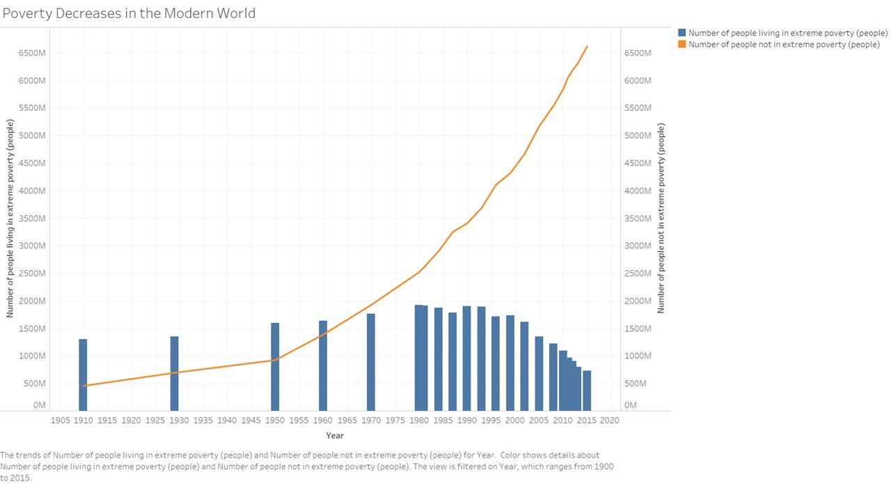
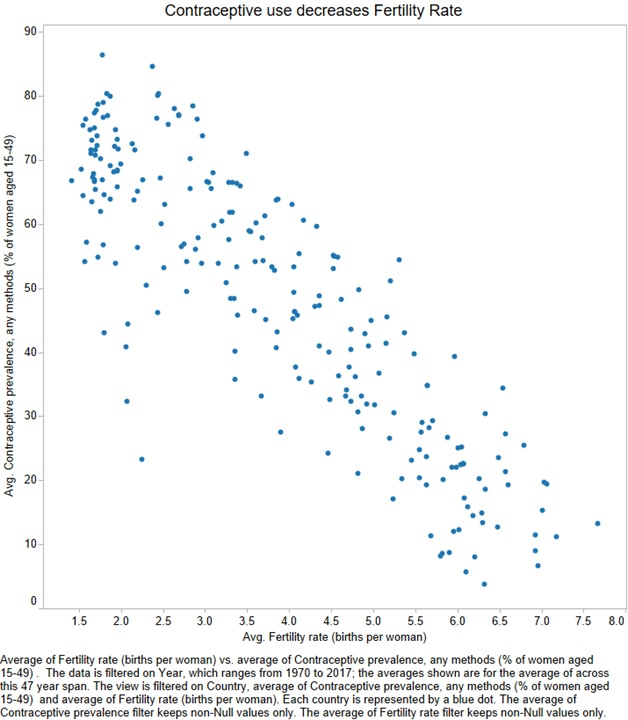
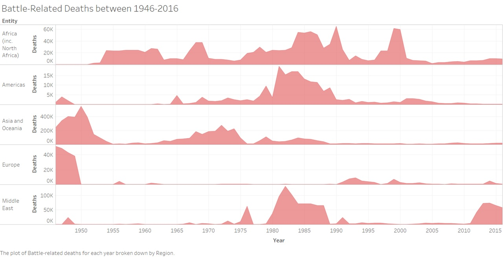

% of Total World Population of 7,714,576,923
By Matthew Parker, Jeremiah Albright, and Adrian Caberos
The world houses more than 7.7 Billion people
Pop culture has regularly compared the growth of our species to that of a uncontrolable Virus,
constantly growing without a concern of natural resources or available space.
But there are many limiting factors that will prevent the Human species from constantly increasing
Limited Access to resources, man-made wars, and limiting reproduction are a few ways that
the human population is already limiting this supposed unlimited growth.
This is a pie chart that demonstates the worlds over-all population for a particular year, and is segregated by contintents, and their countries
Money can be a major factor of a population's growth, lifespan, and overall well being
In essence, money represents that limited resources that we mentioned on the previous page.
We can make this assumption since Money/currency/dinero can be used to allocate food, water, shelter, etc.
All of which are resources that can be consumed, or used up, by human beings.
We are able to interactively see how a country's wealth can have a direct affect on their life expectancy.
As we can see in the visual below, it was not until after the 1970s that we transitioned from having
the majority of the population being extremely under priveledged.
One of the biggest ways we can see if a population is increasing or decreasing is by viewing it's fertility level
Work on this!!!!!!!!!!!!!!!!1
In the graphic below, we can see how the increased use of contraceptives can lower the average fertility of individual countries
Besides proving that contraceptives work, this graphic also allows us to see how it can affect the fertility rates.
In the graphic below we can see how much death has been caused by Wars across the Globe
The Region that has been hit the hardest is Oceanic, which includes Australia, PHillipines, Pacific Islands, etc.
In the graphic below, we are able to see each country's individual population, fertility, and Average Lifespan
We can use this statistics to see where growth is being inhibited,
Where average lifespan is exceeding our expectations,
And where the highest populated areas around the globe are.